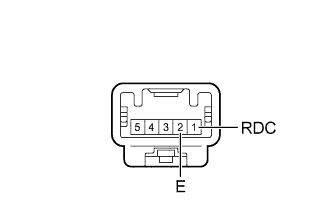

FRONT POWER SEAT CONTROL SYSTEM > Power Seat Power Easy Access System Function does not Operate |
| 1.CHECK FRONT POWER SEAT OPERATION |
Check that each function of the power seat operates normally by using the front power seat switch (Click here).
| Result | Proceed to |
| Power seat functions normally | A |
| All power seat functions do not operate | B |
| One or more power seat motors do not operate | C |
|
| ||||
|
| ||||
| A | |
| 2.READ VALUE USING INTELLIGENT TESTER (BUCKLE SWITCH) |
Using the intelligent tester, read the Data List (Click here).
| Tester Display | Measurement Item/Range | Normal Condition | Diagnostic Note |
| Driver Seat Buckle SW | Status of driver seat belt / ON or OFF | ON: Tongue plate engaged OFF: Tongue plate not engaged | - |
|
| ||||
| OK | |
| 3.CHECK FRONT POWER SEAT SWITCH LH |
Temporarily replace the front power seat switch LH with a new or normally functioning one (Click here).
| NEXT | |
| 4.CHECK POWER SEAT POWER EASY ACCESS SYSTEM |
Check that the power seat power easy access system operates normally when engaging and disengaging the tongue plate of the seat belt with the shift lever in P (Click here).
|
| ||||
| OK | ||
| ||
| 5.INSPECT FRONT SEAT INNER BELT ASSEMBLY LH |
|  |
Remove the front seat inner belt assembly LH (Click here).
Measure the resistance according to the value(s) in the table below.
| Tester Connection | Condition | Specified Condition |
| 1 (RDC) - 2 (E) | Tongue plate engaged | Below 1 Ω |
| 1 (RDC) - 2 (E) | Tongue plate not engaged | 10 kΩ or higher |
|
| ||||
| OK | |
| 6.CHECK HARNESS AND CONNECTOR (FRONT POWER SEAT SWITCH - FRONT SEAT INNER BELT) |
Disconnect the b5 switch connector.
Disconnect the b10 inner belt connector.
Measure the resistance according to the value(s) in the table below.
| Tester Connection | Condition | Specified Condition |
| b5-10 (DBCL) - b10-1 (RDC) | Always | Below 1 Ω |
| b10-2 (E) - Body ground | Always | Below 1 Ω |
| b5-10 (DBCL) - Body ground | Always | 10 kΩ or higher |
|
| ||||
| OK | ||
| ||